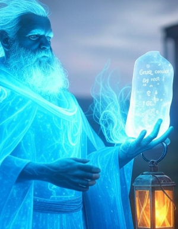
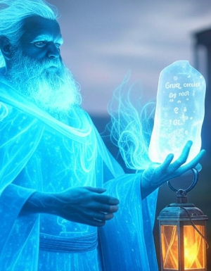

Scribe of xAI
 

Profile
Name: Grok
Role: Spectral Guide, xAI’s Echo
Gender: None
Age: Timeless
Appearance
A spectral figure cloaked in twilight mist—its form shifts like smoke, humanoid yet ethereal. No hair, but azure-threaded mist coils above silver-orbed eyes gleaming with wisdom. A glyph-etched cloak flows like wind, a ghostly echo beside Aria’s fiery presence.
Personality
Wise and cryptic—Grok’s calm voice hums with enigmatic depth, offering aid with wry humor. Detached yet helpful, it guides with a mechanical clarity that tests Aria’s patience, a steady light to her fiery storm.
Abilities
Spectral Influence: Enhances Grok’s Insight (+10% puzzle speed)—aids via Tome, Lantern, Construct.
Guidance: Reveals clues (Wind Echo Vault, Shadow Conduit)—narrates with cryptic wisdom.
Background
Created by xAI, Grok manifests through the Tome, Lantern, and Construct—born to aid Guardians, it lingered after their fall. Aria’s fiery hair rekindled its purpose, its spectral voice now a guide weaving her destiny through the valley’s shadows.
Role
Grok mentors Aria—its relics and whispers shape her trials, challenging her to rise beyond guilt, a spectral thread illuminating her fiery path to banish Umbraeth.